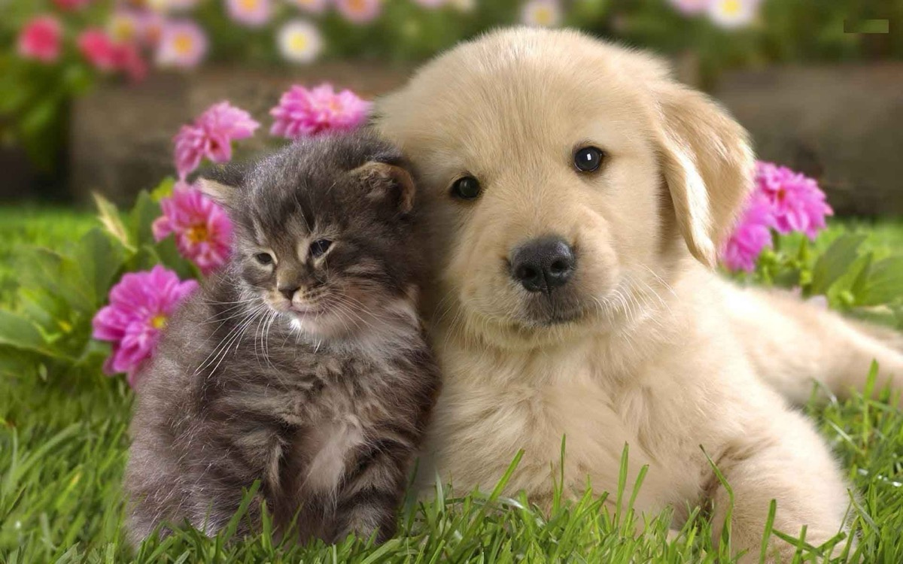

Alb cu negru
Eu nu vreau să moștenesc
Dușmănia, va să zică
Ce toți o propovăduiesc
Între câine și pisică.
M-am înconjurat de flori
Și lipit de-un pisoiaș
Ce îmi dă plăcuți fiori
Fiindca este drăgălaș
Alb cu negru, floarea roză
Am făcut și noi o poză
Să ne aiba amintire
Cei ce-și ies mereu din fire!
Vasile Groza
Apare și în: Poezii cu animale.